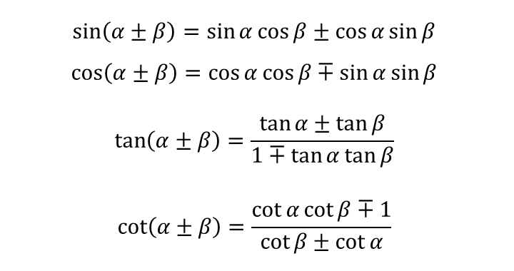

HÀM LƯỢNG GIÁC TRONG TAM GIÁC VUÔNG

BẢNG LƯỢNG GIÁC
CÔNG THỨC ĐỔI GÓC
CÔNG THỨC ĐỔI GÓC

CÔNG THỨC GÓC BỘI
CÔNG THỨC HẠ BẬC
CÔNG THỨC VỚI t=tan(x/2)
CÔNG THỨC TỔNG VÀ HIỆU

CÔNG THỨC TỔNG THÀNH TÍCH
CÔNG THỨC TÍCH THÀNH TỔNG
CÔNG THỨC GÓC CHIA ĐÔI
CÔNG THỨC CÁC GÓC TRONG TAM GIÁC
α, β, γ là 3 góc trong 1 tam giác
QUAN HỆ GIỮA CẠNH VÀ GÓC CỦA MỘT TAM GIÁC
Định lý hình sin, cos và tan
LIÊN HỆ GIỮA CÁC HÀM SỐ LƯỢNG GIÁC